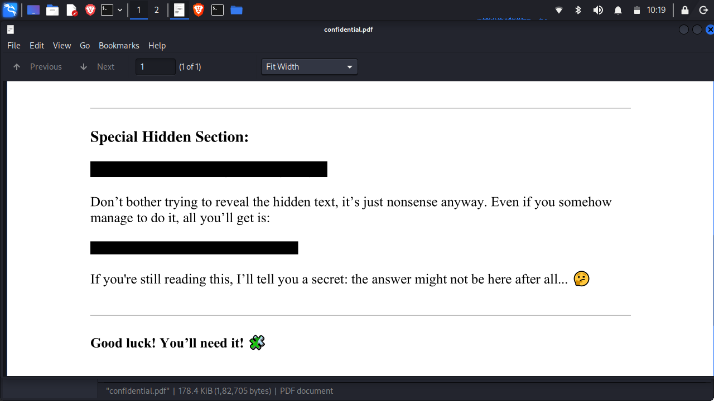

JAN 10, 2026 • 3 MIN READ
Cracking the Riddle: picoCTF Riddle Registry
Category: Forensics
Welcome back, fellow hackers! Today we're diving into a picoCTF challenge from the Forensics category: Riddle Registry. This challenge is a classic example of how "hidden" data isn't always buried in complex code—sometimes it's right in the metadata of the files we use every day.
The Challenge
- Challenge Link: picoCTF - Riddle Registry
- Category: Forensics
- Description: We are given a mysterious PDF file that seems to contain nothing but garbled text. The hint tells us to look beyond the surface and "uncover the flag within the metadata."

Step 1: Initial Investigation
Upon downloading and opening the file (often named confidential.pdf), you'll see a page full of nonsense characters. While some CTF challenges involve selecting "white-on-white" text or looking for hidden layers, the hint specifically points toward metadata.
Metadata is "data about data"—it includes information like the author of a document, the software used to create it, and the date it was modified.

Step 2: Extracting Metadata
There are several ways to view PDF metadata. You can use command-line tools like exiftool or online metadata viewers.
Using Exiftool (Linux/Mac)
Open your terminal and run:
What to Look For
When you run the command, a list of properties will appear (File Name, Directory, File Size, etc.). In this challenge, the Author field stands out. Instead of a name, it contains a strange string of characters ending in an = sign—a dead giveaway for Base64 encoding.
Step 3: Decoding the Flag
Now that we have the Base64 string, we just need to decode it to reveal the plain text.
Copy the string: cGljb0NURntwdXp6bDNkX201dGFkYXRhX2YwdW5kIV80MjQ0MGM3ZH0=
Use a terminal command or a tool like CyberChef. Using Terminal:
The command will decode the string and print the flag to your terminal!